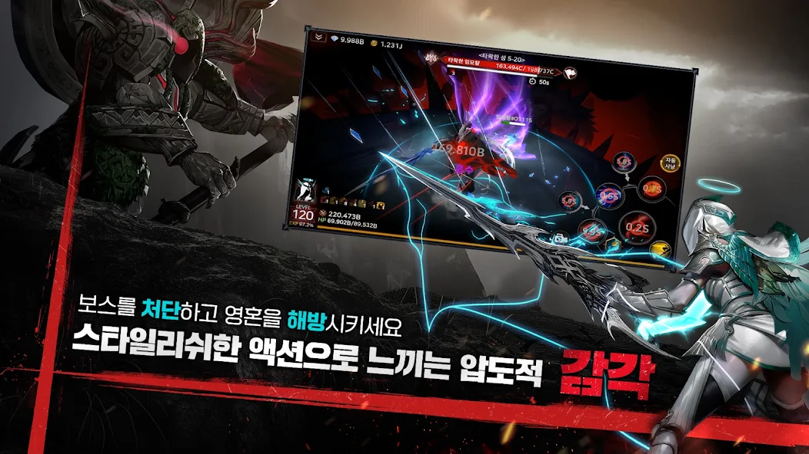
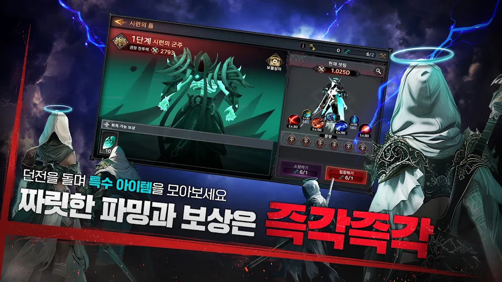
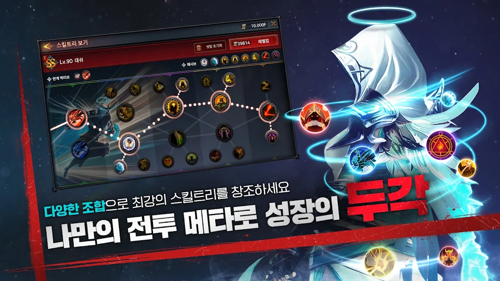
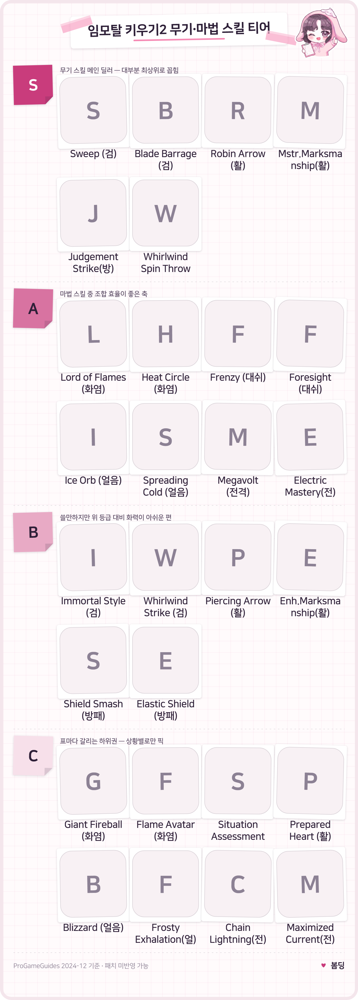
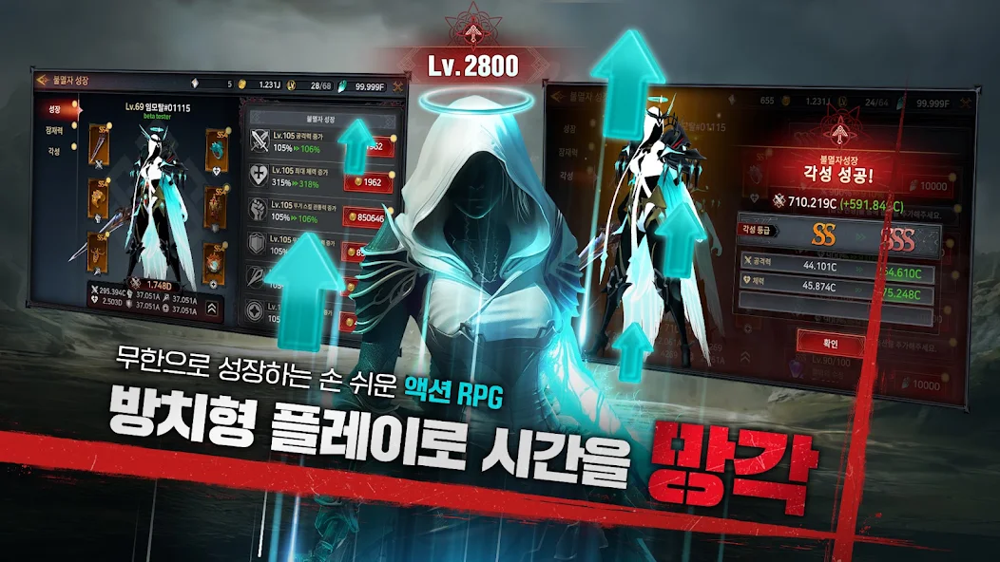
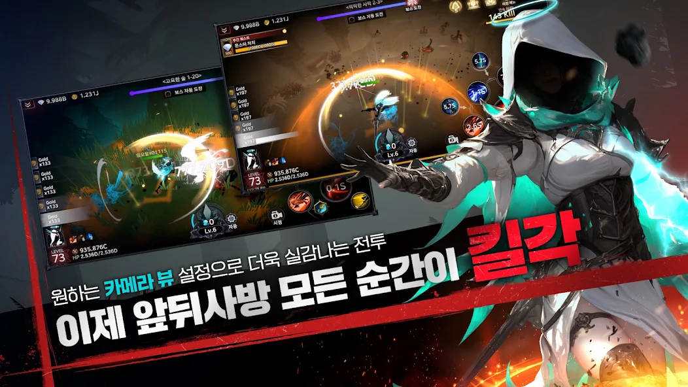

모바일RPG자동사냥게임 임모탈키우기2 티어정리 무기 스킬 부적 순위, 초반 추천세팅까지
예전에 스토리 한 번 쭉 밀고 잠깐 손 놓았던 임모탈 키우기2(이모탈 라이징 2)를 최근에 다시 켜봤는데요, 2025년 8월 신규 서버 오픈 이후로도 2026년 8월까지 매달 업데이트가 꾸준히 올라왔어요. 그래서 오늘은 무기·스킬·부적(유물) 등급까지 한번에 정리해보려고 하는데, 검색하다 보면 옛날 정보나 다른 시리즈 정보가 섞여서 나올 때가 있어서 이번 글은 정식 출시된 2편 기준으로만 걸러서 담았어요.
결론부터 말씀드리면, 무기는 활 계열이 잡몹전이랑 보스전 모두 강세라는 얘기가 제일 많고, 스킬은 검·활·방패 쪽 S급 위주로 트리를 짜는 게 초반 효율이 좋다고 봐요. 다만 이 게임은 2026년 8월까지 매달 패치가 도는 라이브 서비스라 티어가 한 번 굳으면 끝이 아니라 계속 흔들리는 편이라, 아래 등급표는 "지금 기준으로 참고만" 하시는 게 맞아요.
임모탈 키우기2 티어, 뭘 기준으로 나눴을까요
이 글의 등급은 해외 공략 사이트의 스킬 분석 자료와 국내 이용자들이 남긴 실사용 후기를 교차로 참고해서 나눈 거예요. 이 자료는 이렇게 확인했어요 — 해외 쪽은 ProGameGuides의 Best Skills Tier List, 국내 쪽은 네이버 공식 라운지 이용자 글을 봤어요. 공식적으로 발표된 등급표는 아니고, 게임 자체가 무기 4종에 마법 4종을 섞어 "1,000만 개 이상의 조합"이 나온다고 홍보할 만큼 경우의 수가 워낙 많다 보니, 커뮤니티마다 순위가 살짝씩 갈리는 편인데요. 제가 참고한 ProGameGuides 자료는 지금 기준으로는 약 1년 9개월 전(2024년 12월)에 나온 자료라, 그사이 공식 라운지 공지만 봐도 업데이트가 여러 차례 있었으니 일부는 지금이랑 다를 수 있어요. 그래서 아래 등급은 "무조건 이대로 가라"보다는 "고민될 때 참고하는 기준선" 정도로 봐주시면 좋겠어요.
무기는 뭐가 제일 쓸 만할까요
무기는 활이 잡몹전이랑 보스전 모두에서 꾸준히 강하다는 평이 제일 많아요. 임모탈 키우기2는 공식 한국어 사이트 기준으로 무기 4종을 지원하는데,
- 한손검
- 활
- 방패
- 창
이렇게 네 종류예요. 다만 영문 공식 문서 쪽에는 창이 빠지고 검·활·방패 3종만 나와 있어서, 창이 나중에 추가된 무기인지 지역마다 표기가 다른 건지는 저도 확실하게는 못 찾았어요. 활은 전격(Lightning) 속성으로 세팅하면 공격력을 최우선으로 밀고 그다음 무기스킬피해·치명타피해를 챙기는 조합이 2025년 초 해외 커뮤니티 기준으로 많이 언급됐어요. 검 쪽에서는 전격+얼음 조합 얘기도 있었어요.

한손검·활·방패·창, 4종 무기 중 창을 든 전투 장면이에요
이미지 출처: 구글플레이 스토어(공식 스크린샷)

'시련의 틈' 던전 화면 — 장비 슬롯(Lv.90)이 보여요
이미지 출처: 구글플레이 스토어(공식 스크린샷)
스킬 등급표, S부터 C까지 정리해봤어요
무기 스킬이 마법 스킬보다 전반적으로 강하다는 게 이번 등급표의 핵심이에요. 스킬트리 자체가 워낙 방대해서 전부 외우긴 어렵지만, 검·활·방패의 주력 스킬 위주로 먼저 찍고 마법은 보조로 곁들이는 흐름이 초반엔 무난해요. 아래 표는 해외 공략 자료 기준이라 한국어 인게임 표기랑 정확히 안 맞을 수 있어서 영문명 기준으로 정리했어요.

다양한 조합으로 최강의 스킬트리를 만들 수 있어요. 화면엔 SS등급 '대쉬' 스킬이 장착돼 있네요.
이미지 출처: 구글플레이 스토어(공식 스크린샷)

무기·마법 스킬 S~C 등급 정리 (ProGameGuides 2024.12 자료 기준 · 작성 시점 스냅샷). 표의 약칭은 Mstr.=Master of, Enh.=Enhanced 이고, Whirlwind Spin Throw는 방패·Situation Assessment는 활 스킬이에요.
부적(유물)은 등급이 어떻게 나뉘나요
'유물'이 상위 분류고, 그 안에 부적이라는 이름이 붙는 개별 아이템이 있는 구조예요. 등급은 최소 B·S·SS 세 단계로 확인되는데, 이건 커뮤니티 글 기준으로 확인한 거예요. 네이버 공식 라운지 공지에서도 "맹공의 부적"이나 "불멸의 부적"처럼 SS 등급 유물이 2025년 7~8월 공지에서 판매 상품으로 올라온 걸 확인했어요, 이용자들 사이에서는 강화 단위가 B·S급은 '성', SS급은 '강'으로 다르게 불리기도 하거든요. 다만 B급보다 아래 등급이 있는지, SS 위에 더 높은 등급이 있는지는 이번 조사로는 끝까지 확인이 안 됐어요.
확인 위치: 인게임 '유물' 메뉴 강화 화면 또는 관련 공략 커뮤니티 원문 · 확인되면 아래에 채워주세요.
이 섹션의 부적 등급 체계(B/S/SS)를 실제 화면으로 뒷받침할 자리예요
각성하면 뭐가 달라지나요
각성은 '불멸자 성장' 화면에서 진행하는 승급 시스템으로, SS에서 SSS처럼 등급이 한 단계씩 올라가요. 실제로 각성에 성공하면 공격력·체력 같은 스탯이 눈에 띄게 올라가는 걸 화면으로 확인했는데, 정확히 어떤 재료가 몇 개 필요한지 세부 조건까지는 확대해봐도 글자가 작아서 이번엔 다 읽지 못했어요. 성장·장비·각성 탭이 따로 나뉘어 있는 걸 보면 장비 강화나 캐릭터 성장이랑도 맞물려 있는 구조로 보이니, 한쪽만 붙잡지 말고 골고루 챙기시는 게 좋아요.

각성 성공! SS등급에서 SSS등급으로 승급하는 실제 화면이에요
이미지 출처: 구글플레이 스토어(공식 스크린샷)
처음 시작한다면 이렇게 세팅해보세요
초반엔 무료로 주는 장비 소환권(해외 가이드 기준)부터 뽑고, 그 무기를 집중 강화하는 게 제일 빠른 지름길이에요. 처음 시작한다면 이 네 가지만 챙겨도 충분해요.
- 무료로 받는 장비 소환권부터 뽑고, 나온 무기를 집중 강화하기
- 스킬은 범위 광역기, 그중에서도 멀티샷 계열 무기 스킬 위주로 육성하기
- 부적(유물)은 등급 색깔만 보지 말고 실제 옵션·레벨을 같이 보기(파란색이어도 레벨이 잘 붙은 게 보라색 저레벨보다 나을 수 있어요)
- 캐릭터 레벨 300까지는 공격력·체력 위주로 몰아주고, 보스전 들어가기 전엔 상대 속성에 맞게 장비 바꿔주기

보스 자동 도전 화면이에요. 레벨·HP·골드가 한눈에 보이고, 카메라 뷰를 바꿔가며 싸울 수 있다고 하네요.
이미지 출처: 구글플레이 스토어(공식 스크린샷)
과금 안 해도 즐길 수 있을까요
무과금으로도 진행 자체는 가능하지만, 성장 속도 차이는 있는 편이에요. 2025년 7~8월 공지에서 SS 등급 유물이 유상 판매 상품으로 올라온 걸 확인했어요(가격·통화 표기는 공지 본문을 열 수 없어서 그대로 옮기지는 않았어요). 정확한 결제 금액이나 확률형 아이템 공식 확률 표기가 어떻게 되어 있는지는 이번 조사로는 다 확인하지 못했어요. 과금을 고민 중이시라면 상점 페이지에서 확률 공지를 직접 한 번 확인해보시는 게 좋아요.
자주 묻는 질문
Q. 임모탈 키우기2랑 임모탈 키우기(1편)는 다른 게임인가요?
네, 서로 다른 게임이에요. 2편은 2024년 9월에 출시된(올해로 2주년) 완전 3D 방치형 액션RPG라 그래픽부터 시스템까지 전작이랑 많이 달라졌고, 검색하다 보면 옛날 1편 정보가 섞여 나올 때가 있으니 헷갈리지 않게 조심하시는 게 좋아요.
Q. 창(스피어) 무기, 진짜 있는 거 맞아요?
한국어 공식 사이트에는 한손검·활·방패·창 4종이 소개돼 있는데, 영문 공식 문서에는 창이 빠져 있네요. 지역별 표기 차이인지 추가 무기인지는 아직 명확하지 않아서, 인게임 무기 목록에서 직접 확인해보시는 게 확실해요.
Q. 부적이랑 유물, 같은 건가요?
같은 계열이긴 한데, 정확히는… '유물'이 큰 카테고리고, 그 아래 낱개 아이템에 '맹공의 부적'·'불멸의 부적'처럼 부적이라는 이름이 붙는 방식이에요.
Q. 무과금으로도 재밌게 할 만한가요?
진행 자체는 무과금으로도 가능하지만, 성장 속도 차이에 대한 불만 글도 있더라고요. 유물 뽑기나 강화 재화는 과금하면 확실히 더 빨라지는 구조라, 급하게 안 몰아붙이고 천천히 키운다는 마음으로 접근하시면 스트레스가 덜해요.
Q. 여기 나온 등급표, 지금도 그대로 믿어도 돼요?
패치가 잦은 게임이다 보니 세부 순위는 흔들릴 수 있는데, 제가 참고한 자료가 2024년 12월~2025년 초 것이라 지금 밸런스와는 다를 수 있어요. 그래도 안심하지 마시고 공식 라운지 업데이트 공지를 한 번씩 같이 확인해보시는 게 좋답니다.
오늘은 임모탈 키우기2(이모탈 라이징 2)의 무기·스킬·부적 등급이랑 초반 세팅까지 한번에 정리해봤는데요, 게임 자체가 조합의 폭이 워낙 넓어서 여기 나온 건 하나의 참고 기준으로만 봐주시고 본인 플레이 스타일에 맞게 골라가시는 게 제일 좋습니다. 매달 패치가 도는 게임이라 저도 다음에 달라진 점이 있으면 다시 들고 올게요.
참고한 곳
· 임모탈 키우기2 공식 한국어 사이트
· 네이버 게임 라운지 - 임모탈 키우기 2
✔ 임모탈 키우기2 같이 보기 좋은 내용
· 모바일RPG자동사냥게임 임모탈키우기2 공략 신규 서버 복귀각! 1주년 업데이트까지?